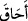
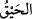

43. Çünkü onlar yeryüzünde büyüklük taslıyor ve kötü tuzaklar kuruyorlardı.
Halbuki kişi kazdığı kuyuya kendi düşer. Onlar öncekilerin kanunundan (onlara
uygulanandan) başkasını mı bekliyorlar? Allah’ın kanununda asla bir değişme
bulamazsın, Allah’ın kanununda kesinlikle bir sapma da bulamazsın.
“Çünkü onlar yeryüzünde” Allah’a karşı azgınlık yapıyor ve O’na îman etmeyip
“büyüklük taslıyor ve kötü tuzaklar kuruyorlardı.” “__WORD__, İlâhî emre karşı tekebbür
etmektir.
Bahru’l-ulûm’da der ki, “istikbar ve tekebbür” kelimeleri, lafzen “isti’zam ve
taazzum” gibidir. Bazı büyükler der ki: Allah seni yerden, topraktan yarattı (toprak
senin annendir); öyleyse annene karşı büyüklük taslaman doğru olmaz.
Yüce Allah seni topraktan yarattı.
Öyle ise ey kul, toprak gibi mütevazi ol.
Tâcü’l-masâdır’da der ki: “Mekr, gecenin kararması demektir. Hile ve tuzak
anlamındaki “mekr” bundan doğmuştur. Gizlice fesâd yaymaktır. Râğıb der ki “mekr,”
bir hile ve kurnazlıkla başkasını maksadından çevirmektir. Bu da iki türlüdür: Birincisi
“iyi” olanıdır ki bu hile ile iyi bir işi araştırmaktır. Allah Teâlâ’nın “(Yahudiler) tuzak
kurdular; Allah da onların tuzaklarını bozdu. Allah, tuzak kuranların hayırlısıdır.”
(Âl-i İmrân 3/54) âyeti bu kabildendir. İkincisi ise “kötü” olanıdır ki o da hile ile çirkin
bir işi araştırmaktır. İşte izahını yaptığımız âyetteki “mekr” bu kabildendir. Bundan
dolayı kötü olarak nitelendirilmiştir. Mânâ şöyledir: Bu durum onlarda Hz. Peygamber
(s.a.)’i bertaraf etmek ve hatta onu öldürüp helak ve yok etmek konusunda kötü tuzaklar
kurmalarını artırdı.
“Halbuki kişi kazdığı kuyuya kendi düşer.”
Kâmûs’ta der ki, lügatte “__WORD__ demek, “__WORD__ demektir ki anlamı “onu kuşattı”
demektir. el-Muhtâr’da der ki “__WORD__ gibi “__WORD__ __WORD__ ifâdesi de “azap onları kuşattı,
azap onlara indi” demektir. “__WORD__ kişinin kötü fiilinden dolayı kendisini kuşatan şeydir.
Mânâ şöyledir: Kötü tuzak ancak tuzağı kuranı kuşatır. Bedir günü tuzakları onları
kuşatmıştır. Kötü hile ancak kendi ehlini kuşatır. Yani, her hilekârın hilesi kendisini
kuşatır, etrafını ve çevresini kaplar. Kimin hakkında kötülük düşünmüşse, onu kendinde
görür.
Bahru’l-ulûm’da der ki, mânâsı kötü tuzak ehline yapışıp onu kuşatır, demektir.
Hadis-i şerifte şöyle vârid olmuştur: “Kimseye hile yapmayın, tuzak kurmayın, tuzak
kurana yardım etmeyin. Zira Allah Teâlâ “Halbuki kişi kazdığı kuyuya kendi düşer”
buyurmaktadır. Azmayın, azgınlık yapana yardım etmeyin zira Allah Teâlâ “Ey
insanlar! Sizin taşkınlığınız ancak kendi aleyhinizedir...” (Yûnus 10/23)